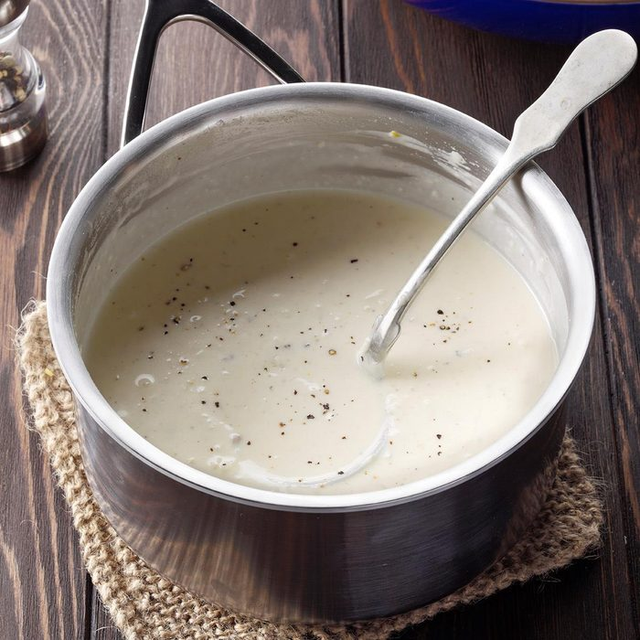

Alfredo Sauce Recipe

A very easy and quick way to make your favorite pasta sauce!
Ingredients
- 2 cups heavy whipping cream
- 1/4 cup butter
- 1 teaspoon minced garlic
- 1/2 teaspoon salt
- 1 1/2 teaspoons black pepper
- 2 cups grated parmesean cheese
- 1 1/2 teaspoons italian seasoning
Steps
- Place butter in medium sauce pan, melt butter on low to medium-low heat
- Slowly pour cream over melted butter and stir
- Add the garlic, salt and pepper; stir occasionally for 2 minutes
- Add the italian seasoning and stir for 1 minute
- Slowly add pinchfuls of parmesean cheese and stir until melted